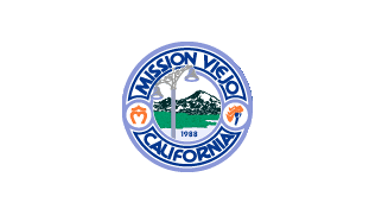
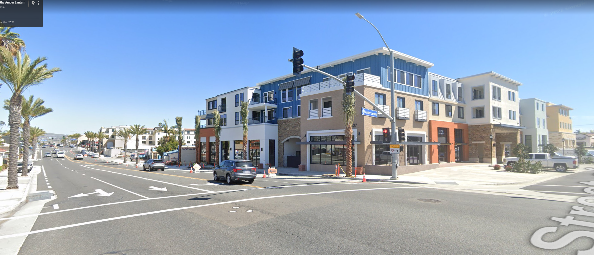
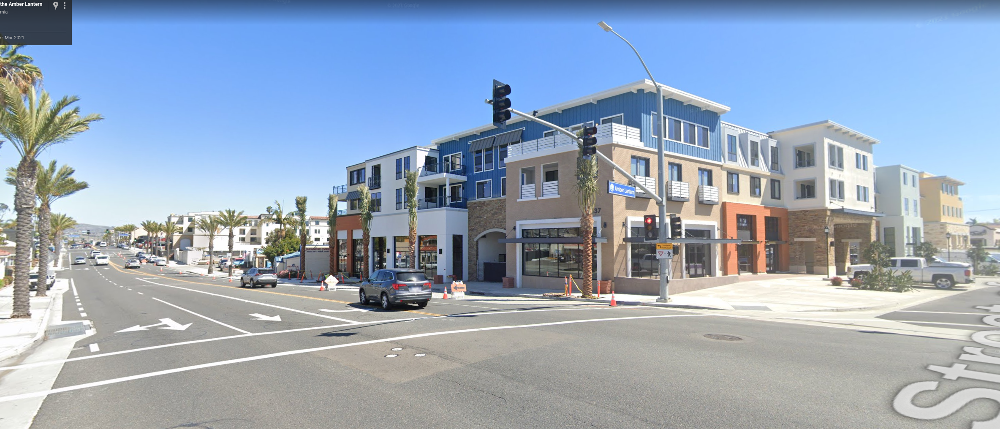
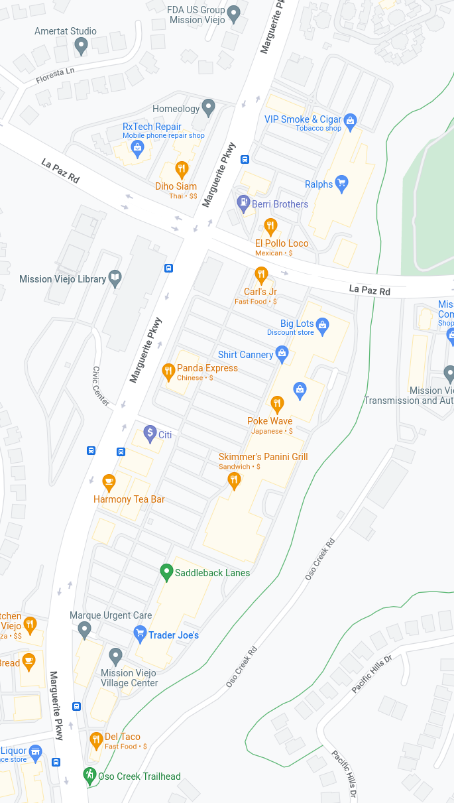
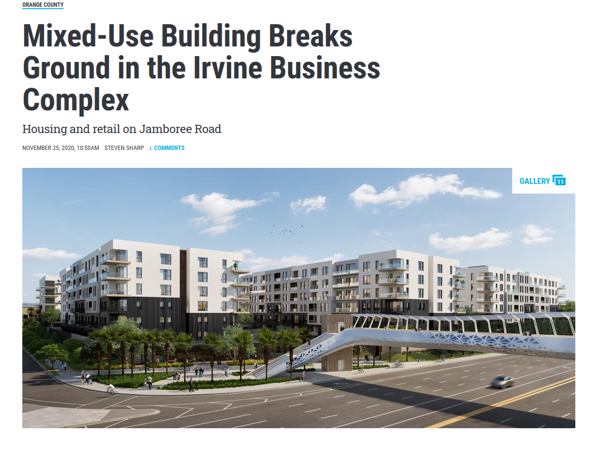
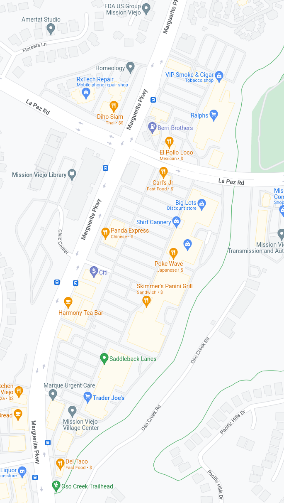
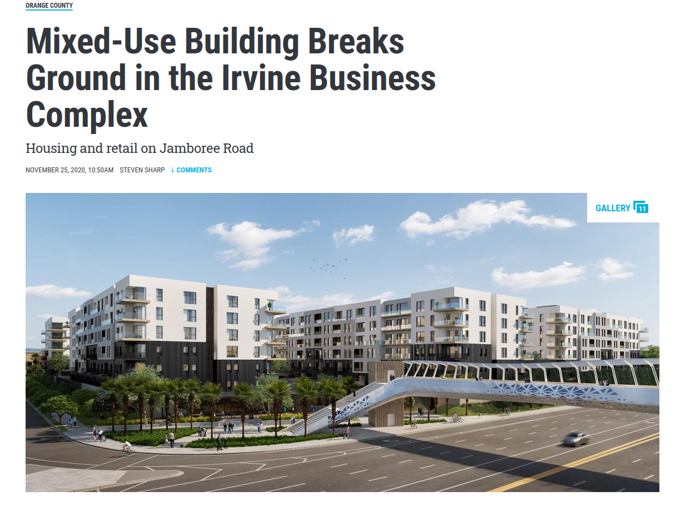

City of Mission Viejo
Established 1988
Flags and Symbolism

Red, White, Blue - 13 stripes - 50 stars
Flags and Symbolism

California Grizzly Bear - 1 Star - Bear Republic
Flags and Symbolism

Blue and Yellow - Europe's breadbasket - Blue Skies Over Golden Wheatfields
Flags and Symbolism

Seal on a Bedsheet - Poor/Old/No Design - No One Flies It
Why should we care about a flag?
Symbols of Unity Banners to Rally Under When Facing Challenges Speaks to the level of design in a city
Flags and Symbolism
Blue for the Lake - Mission Bell for Southern California Missions - 4 Stars for the Hospital, College, Lake, and Participation in World Events (World Cup, Olympics)
We care about flags because we care about design
What does it mean to have a well designed city? What scale are cities that last made at?


Good design takes investment

Mission is still accessible by Bicycle. We know this because we've seen an explosion of e-bikes.
When was the last time you walked anywhere but a city park?

The originators of our city designed every home within walking distance of a public park, and when was the last time you experienced traffic on the way to the park?
Never, because there are alternitives to driving. We did not design the city to have a grocer or your employer within walking distance like New York, London, or Rome.
Our First Ask
The first thing we should ask for is bicycle infrastructure
The road is dangerous for kids on their e-bikes and we need to protect them from 1-ton metal boxes going 50MPH.


Mixed-Use Design
Good design brings places closer to people or people closer to places
What did people complain about?
 

 


